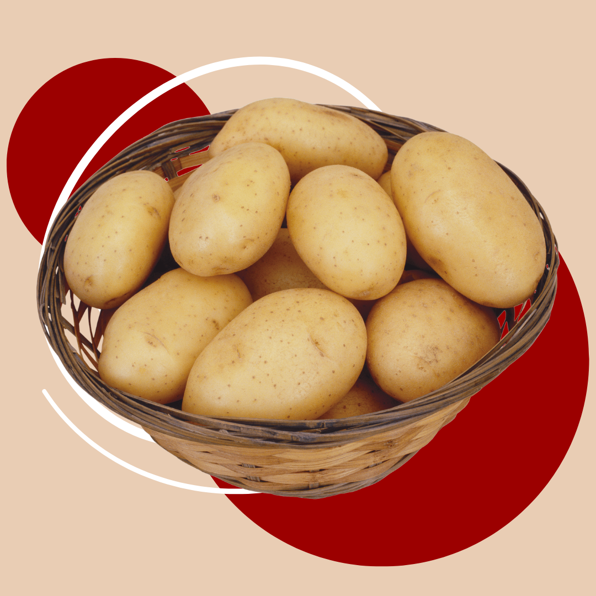
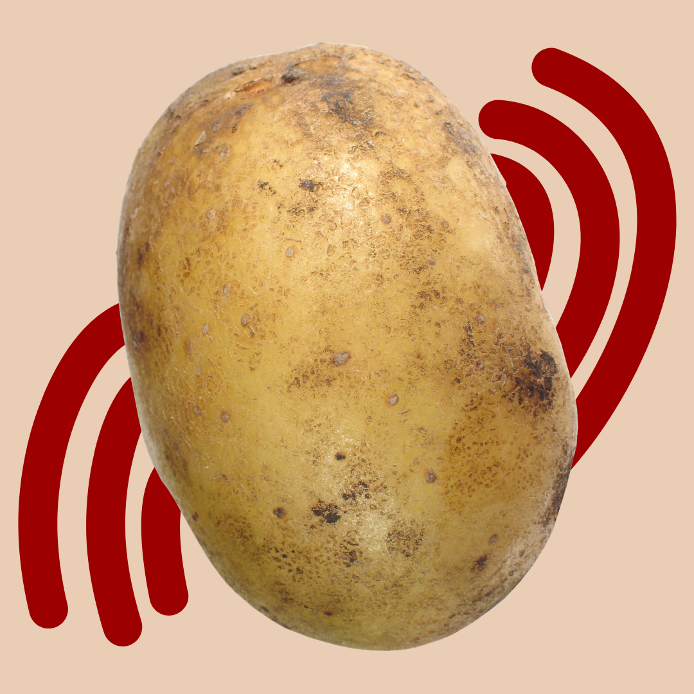
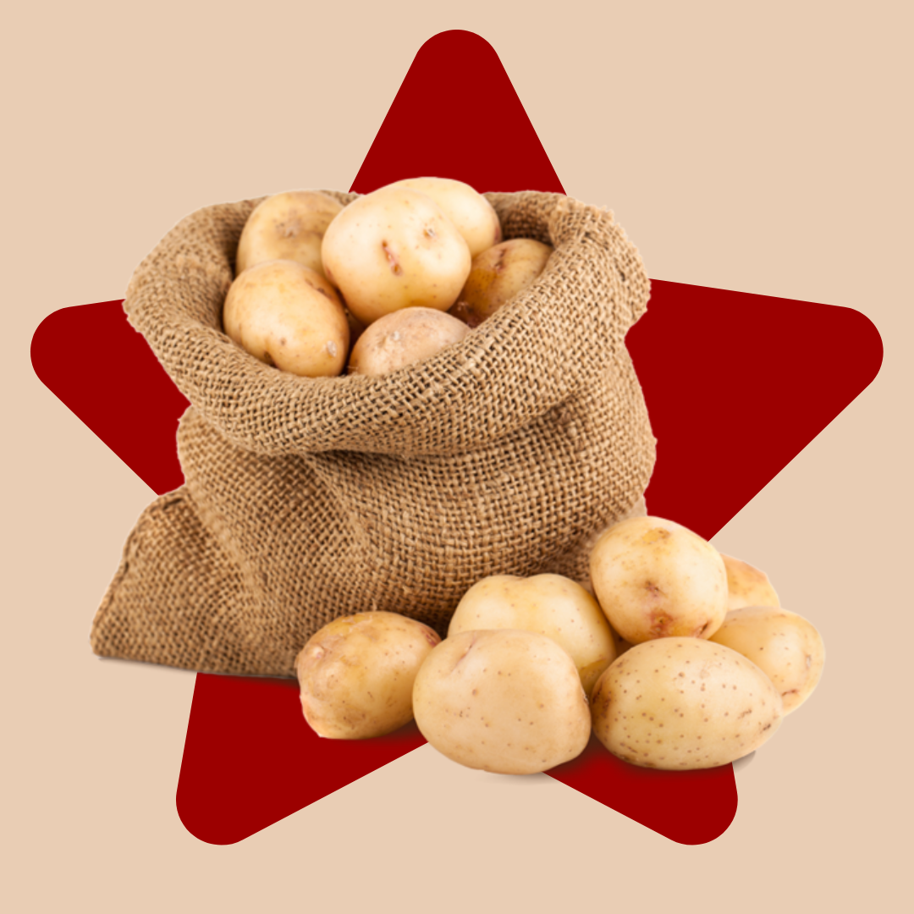

LA GRANDE STORIA DELLA PATATA
La patata: dalle superstizioni all'iconicità.
Il disprezzo verso la patata
Arrivata in Europa dall’America nel Cinquecento, la patata fu inizialmente accolta con diffidenza. Essendo una Solanacea, veniva associata a piante velenose e si credeva potesse causare malattie come la peste e la lebbra. Per questo era usata soprattutto a scopi medicinali e ornamentali.
L’accettazione della patata
Nel Settecento, Antoine Parmentier ne promosse il consumo, avendone scoperto il alore nutritivo durante la prigionia in Prussia. Grazie anche alle carestie e alla sua resistenza al freddo, la patata si diffuse sempre più, diventando un alimento economico e fondamentale per le classi popolari.
La patata diventa iconica
Nell’Ottocento, la patata contribuì alla crescita demografica e, secondo alcuni studiosi, allo sviluppo della Rivoluzione industriale, fornendo energia ai lavoratori. Col tempo divenne anche un simbolo nazionale, soprattutto in paesi come la Francia. Oggi è uno degli alimenti più consumati al mondo.


